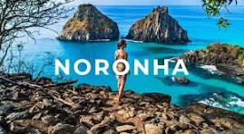

Belezas naturais de tirar o fôlegoNoronha é um verdadeiro santuário ecológico com praias de águas cristalinas, falésias, morros vulcânicos e vegetação preservada. Vida marinha rica e acessívelÉ um dos melhores lugares do Brasil para ver tartarugas marinhas, golfinhos-rotadores, arraias e até tubarões — mesmo em mergulhos rasos ou flutuação com snorkel. Mergulho de classe mundialNoronha está entre os 5 melhores pontos de mergulho do mundo, com visibilidade de até 50 metros e águas mornas o ano inteiro. Observação de golfinhosNa Baía dos Golfinhos,
é possível ver dezenas às vezes centenas de golfinhos nadando e saltando logo ao amanhecer. Um espetáculo natural emocionante. Praias premiadasA Baía do Sancho já foi eleita várias vezes a praia mais bonita do mundo pelo TripAdvisor. Outras como Praia do Leão e Cacimba do Padre também são incríveis. Pôr do sol inesquecívelAssistir ao pôr do sol no Forte do Boldró ou no Mirante do Morro Dois Irmãos é uma experiência mágica e imperdível.
